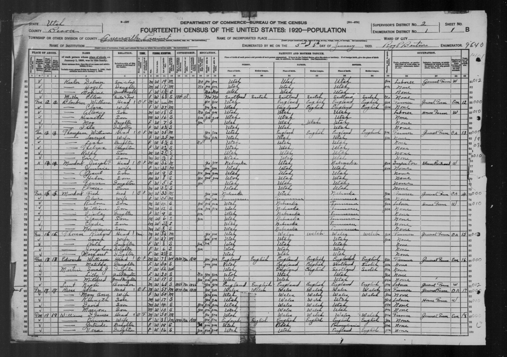
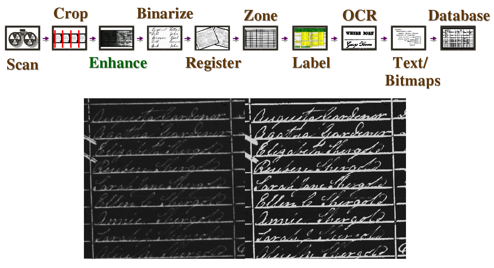

## Family History Technology # The Cutting Edge #### Daniel Zappala and William Barrett <small>Brigham Young University</small>
## Academic research develops the technology of the future
## <a href="http://fhtw.byu.edu/" target="_blank">Family History Technology Workshop</a> --- Success Stories <hr> Current Work <hr> Grand Challenges
## Success Story: 20 Minute Genealogy Project * started at BYU in 2009 * how can I visualize what work needs to be done in my tree?
## What Ancestor Should I Work On?  --- ## <a href="http://leaf.byu.edu" target="_blank">leaf</a>  --- ## <a href="https://kinpoint.com/person/FS-KWCH-G25/explore?utm_nooverride=1&popOver=undefined&zoom=5,3&summary=open" target="_blank">Kinpoint</a>  --- ## <a href="https://familysearch.org/tree/#view=tree§ion=pedigree&person=KWCH-G25" target="_blank">FamilySearch</a>
## Success Story: The Digital Microfilm Pipeline
## 1920 Census  --- ## Scan and Crop --- ## Enhance  --- ## Binarize --- ## Register --- ## Zone and Label --- ## ScanStone: BYU Students <img src="figures/genealogy/scanstone.png" style="height:550px;"/> --- ### 2012: 10 Terabytes/day --- ### Digital Microfilm Pipeline
## Success Stories: Handwriting Recognition and Intelligent Indexing
## Handwriting Recognition <iframe width="560" height="315" src="https://www.youtube.com/embed/eBQjHgejchA" frameborder="0" allowfullscreen></iframe> --- Intelligent Indexing <iframe width="420" height="315" src="https://www.youtube.com/embed/gqdVzEPnBEw" frameborder="0" allowfullscreen></iframe>
## Success Story: [BYU Family History Technology Lab](https://fhtl.byu.edu/#/home)
## BYU Family History Technology Lab [Relative Finder](https://www.relativefinder.org/) [Virtual Pedigree](http://virtual-pedigree.fhtl.byu.edu/)
## Current Work: New Tech
## Get Help --- ## <a href="http://ancestorcloud.com/#/" target="_blank">Ancestor Cloud</a>  --- ## Preserve Memories --- ## <a href="http://www.gozeapp.com/" target="_blank">Goze</a>  --- ## <a href="http://www.passitdown.com/" target="_blank">Pass It Down</a>  --- ## <a href="http://www.wiithu.com/" target="_blank">wiithu</a>  --- ## <a href="http://www.kidchatteroo.com/" target="_blank">Kid Chatteroo</a>  --- ## <a href="https://www.youtube.com/watch?v=ecfRMfxYEyI" target="_blank">Studio by Legacy Republic</a> 
## Current Work: Development
<div class="small"> <ul><li>I want to keep my personal information private. And I want to determine what constitutes personal information.</li> <li>I want to choose who to work with on the different areas of my tree. I choose what to share and who to share it with.</li> <li>I want to share my genealogy with the world. And when someone tries to change something, I want to review it first.</li> </ul> </div> --- ## TapGenes Data Privacy  --- ## Tree Quality  --- ## Visualizing Historical Maps  --- ## Long-Lived URLs * how FamilySearch creates a URL that is valid for a long time * https://familysearch.org/ark:/61903/1:1:MC5F-NH3
## Current Work: Research
## Automatic Indexing * able to index in five days the same amount of data as would have taken 1539 career-years for a single human to index --- ## Checking Auto-Extracted Data * constraints on reasonableness of data --- ## Semi-Automated Transcription --- ## Handwriting Recognition with GPUs * after 465 iterations with pretrained model  --- ## Intelligent Pen * tracing and recognizing handwriting  --- ## Binarization of Historical Documents * Heterogeneous CPU and GPU computing 
## Grand Challenges --- ## Finding Research Opportunities
## Find-A-Record --- ## Challenge * A computerized assistant that has all the smarts of a professional genealogist * knows how place names and boundaries have changed over time * tells me where I should search * automatically translates languages
## Maintaining a Research Log
## Research Ties --- ## FamilySearch --- ## Challenge * A computerized assistant that keeps track of your research history * What do I need to do? * What have I done recently? * Enter documents found and populate family history with the information it contains
## Using Collaboration Tools
## WikiTree: profile managers <img src="figures/genealogy/wikitree.png" style="height:550px;"/> --- ## FamilySearch: last edit wins! --- ## Challenge * Collaboration that allows people to maintain private versions of data and resolve differences in the global tree * Quality measures for genealogy data so we can tell how "good" an online tree or person or fact is * Contributor ranking based on past research results * Committee decisions
## Exploring Analytics
## Challenge * Big data applied to your data * How complete is my family tree? * How many documents have I found in the last month? * How has the quality of my tree improved over time? --- ## Challenge * Big data applied to all data * How does the 1830 census of an entire town connect with the 1840 census of the same town? * And with subsequent censuses? * Can family connections be automatically generated across these data sets? * Can we automatically identify who moved? Who got married?